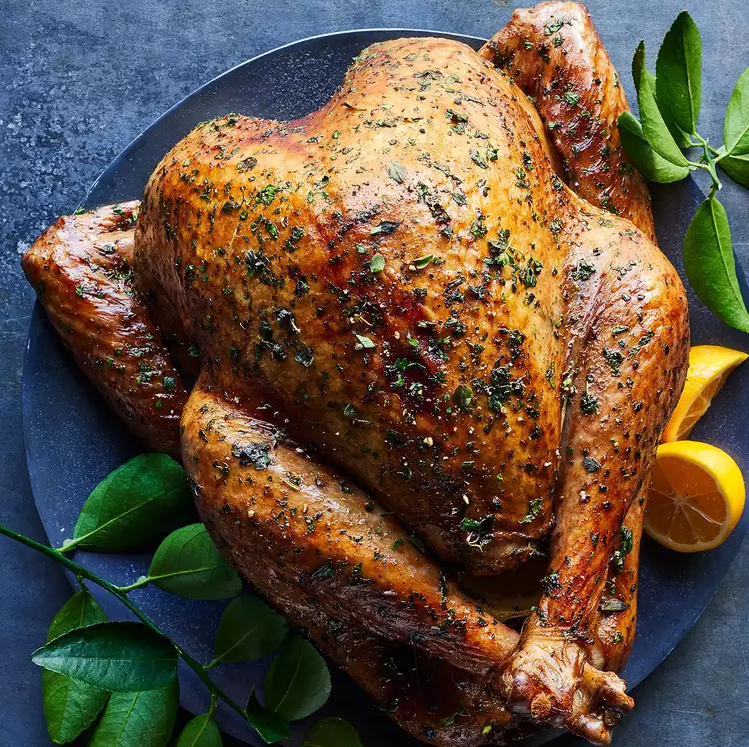

Herb Roasted Turkey

(Please click on the image above to follow the link to the original site and recipe!)
A delicious and healthy dish for the holidays!
Pultry is a healthier protein in comparison to it's red meat alternatives. Turkey's dark
meat has slightly less callories than it's chicken equivalent. This recipe will provide you a
delectable herb-roasted turkey filling enough for a feast without compromising on health!
Cook time is split between 30 minutes of active cooking and 3hrs of passive cooking for a
3.5 hour total cook time. Please plan accordingly!
Ingredients
- One 10-12 lb turkey
- 1.4 cupfresh herbs, plus 20 whole sprigs, such as thyme, rosemary, sage, oregano and/or marjoram, divided
- 2 tbsp canola oil
- 1 tsp salt
- 1 tsp ground pepper
- 1 1/2 cup aromatics, onion, apple, lemon and/or orange, cut into 2-in pieces
- 3 cups water, more as needed
Steps
-
Position a rack in the lower third of the oven; preheat to 475°F.
-
Remove giblets and neck from turkey cavities and reserve for making gravy. Place the
turkey, breast-side up, on a rack in a large roasting pan; pat dry with paper towels.
Mix minced herbs, oil, salt and pepper in a small bowl. Rub the herb mixture all over
the turkey, under the skin and onto the breast meat. Place aromatics and 10 of the
herb sprigs in the cavity. Tuck the wing tips under the turkey. Tie the legs together
with kitchen string. Add 3 cups water and the remaining 10 herb sprigs to the pan.
-
Roast the turkey until the skin is golden brown, 45 minutes. Remove from the oven.
Cover the breast with a double layer of foil, cutting as necessary to conform to the breast.
-
Reduce oven temperature to 350°F and continue roasting until an instant-read thermometer
inserted into the thickest part of a thigh without touching bone registers 165°F, 1 1/4
to 1 3/4 hours more. If the pan dries out, tilt the turkey to let juices run out of the
cavity and into the pan and add 1 cup water.
-
Transfer the turkey to a serving platter and cover with foil. Let the turkey rest for
20 minutes. Remove string and carve.
-
Enjoy!